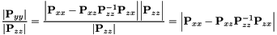

Table of Contents
Minimum Mean Square Error (MMSE) Estimation
Consider the following static state estimation problem: Given a prior distribution (probability density function or pdf) for a Gaussian random vector with dimension of  and a new
and a new  dimentional measurement
dimentional measurement  corrupted by zero-mean white Gaussian noise independent of state, , we want to compute the first two (central) moments of the posterior pdf . Generally (given a nonlinear measurement model), we approximate the posterior pdf as: . By design, this is the (approximate) solution to the MMSE estimation problem [Kay 1993] [11].
corrupted by zero-mean white Gaussian noise independent of state, , we want to compute the first two (central) moments of the posterior pdf . Generally (given a nonlinear measurement model), we approximate the posterior pdf as: . By design, this is the (approximate) solution to the MMSE estimation problem [Kay 1993] [11].
Conditional Probability Distribution
To this end, we employ the Bayes Rule:
In general, this conditional pdf cannot be computed analytically without imposing simplifying assumptions. For the problem at hand, we first approximate (if indeed) , and then have the following joint Gaussian pdf (noting that joint of Gaussian pdfs is Gaussian):
Substitution of these two Gaussians into the first equation yields the following conditional Gaussian pdf:
![\begin{align*} p(\mathbf{x} | \mathbf{z}_m) &\simeq \frac{\mathcal N(\hat{\mathbf y}, \mathbf P_{yy})}{\mathcal N (\hat{\mathbf z}, \mathbf P_{zz}) }\\ &= \frac{\frac{1}{\sqrt{(2\pi)^{n+m}|{\mathbf{P}_{yy}}|}}e^{-\frac{1}{2}(\mathbf{y}-\hat{\mathbf{y}})^\top\mathbf{P}_{yy}^{-1}(\mathbf{y}-\hat{\mathbf{y}})}}{ \frac{1}{\sqrt{(2\pi)^{m}|{\mathbf{P}_{zz}}|}}e^{-\frac{1}{2}(\mathbf{z}_m-\hat{\mathbf{z}})^\top\mathbf{P}_{zz}^{-1}(\mathbf{z}_m-\hat{\mathbf{z}})}}\\ &= \frac{1}{\sqrt{(2\pi)^{n}|{\mathbf{P}_{yy}}|/|{\mathbf{P}_{zz}}|}} e^{ {-\frac{1}{2}\left[ (\mathbf{y}-\hat{\mathbf{y}})^\top\mathbf{P}_{yy}^{-1}(\mathbf{y}-\hat{\mathbf{y}}) - (\mathbf{z}_m-\hat{\mathbf{z}})^\top\mathbf{P}_{zz}^{-1}(\mathbf{z}_m-\hat{\mathbf{z}}) \right]} }\\ &=: \mathcal N (\hat{\mathbf x}^\oplus, \mathbf P_{xx}^\oplus) \end{align*}](form_302.png)
We now derive the conditional mean and covariance can be computed as follows: First we simplify the denominator term in order to find the conditional covariance.
where we assumed  is invertible and employed the determinant property of Schur complement. Thus, we have:
is invertible and employed the determinant property of Schur complement. Thus, we have:

Next, by defining the error states , , , and using the matrix inersion lemma, we rewrite the exponential term as follows:
![\begin{align*} &(\mathbf{y}-\hat{\mathbf{y}})^\top\mathbf{P}_{yy}^{-1}(\mathbf{y}-\hat{\mathbf{y}}) - (\mathbf{z}_m-\hat{\mathbf{z}})^\top\mathbf{P}_{zz}^{-1}(\mathbf{z}_m-\hat{\mathbf{z}}) \\[5px] &= \mathbf{r}_y^\top\mathbf{P}_{yy}^{-1}\mathbf{r}_y - \mathbf{r}_z^\top\mathbf{P}_{zz}^{-1}\mathbf{r}_z \\[5px] &= \begin{bmatrix} \mathbf{r}_x \\ \mathbf{r}_z \end{bmatrix}^\top \begin{bmatrix} \mathbf{P}_{xx} & \mathbf{P}_{xz} \\ \mathbf{P}_{zx} & \mathbf{P}_{zz} \end{bmatrix}^{-1} \begin{bmatrix} \mathbf{r}_x \\ \mathbf{r}_z \end{bmatrix} - \mathbf{r}_z^\top\mathbf{P}_{zz}^{-1}\mathbf{r}_z \\[5px] &= \begin{bmatrix} \mathbf{r}_x \\ \mathbf{r}_z \end{bmatrix}^\top \begin{bmatrix} \mathbf{Q} & -\mathbf{Q}\mathbf{P}_{xz}\mathbf{P}_{zz}^{-1} \\ -\mathbf{P}_{zz}^{-1}\mathbf{P}_{zx}\mathbf{Q} & \mathbf{P}_{zz}^{-1}+\mathbf{P}_{zz}^{-1}\mathbf{P}_{zx}\mathbf{Q}\mathbf{P}_{xz}\mathbf{P}_{zz}^{-1} \end{bmatrix} \begin{bmatrix} \mathbf{r}_x \\ \mathbf{r}_z \end{bmatrix} - \mathbf{r}_z^\top\mathbf{P}_{zz}^{-1}\mathbf{r}_z \\[5px] &\hspace{8cm} \mathrm{where} ~ \mathbf{Q}= (\mathbf{P}_{xx} - \mathbf{P}_{xz}\mathbf{P}_{zz}^{-1}\mathbf{P}_{zx})^{-1} \nonumber\\[5px] &= \mathbf{r}_x^\top\mathbf{Q}\mathbf{r}_x -\mathbf{r}_x^\top\mathbf{Q}\mathbf{P}_{xz}\mathbf{P}_{zz}^{-1}\mathbf{r}_z -\mathbf{r}_z^\top\mathbf{P}_{zz}^{-1}\mathbf{P}_{zx}\mathbf{Q}\mathbf{r}_x \nonumber\\ &\hspace{4.6cm}+\mathbf{r}_z^\top( \textcolor{red}{\mathbf{P}_{zz}^{-1}}+\mathbf{P}_{zz}^{-1}\mathbf{P}_{zx}\mathbf{Q}\mathbf{P}_{xz}\mathbf{P}_{zz}^{-1} )\mathbf{r}_z -\textcolor{red}{\mathbf{r}_z^\top\mathbf{P}_{zz}^{-1}\mathbf{r}_z} \\[5px] &= \mathbf{r}_x^\top\mathbf{Q}\mathbf{r}_x -\mathbf{r}_x^\top\mathbf{Q}[\mathbf{P}_{xz}\mathbf{P}_{zz}^{-1}\mathbf{r}_x] -[\mathbf{P}_{xz}\mathbf{P}_{zz}^{-1}\mathbf{r}_z]^\top\mathbf{Q}\mathbf{r}_x +[\mathbf{P}_{xz}\mathbf{P}_{zz}^{-1}\mathbf{r}_z]^\top\mathbf{Q}[\mathbf{P}_{xz}\mathbf{P}_{zz}^{-1}\mathbf{r}_z] \\[5px] &= (\mathbf{r}_x - \mathbf{P}_{xz}\mathbf{P}_{zz}^{-1}\mathbf{r}_z)^\top \mathbf{Q} (\mathbf{r}_x - \mathbf{P}_{xz}\mathbf{P}_{zz}^{-1}\mathbf{r}_z) \\[5px] &= (\mathbf{r}_x - \mathbf{P}_{xz}\mathbf{P}_{zz}^{-1}\mathbf{r}_z)^\top (\mathbf{P}_{xx} - \mathbf{P}_{xz}\mathbf{P}_{zz}^{-1}\mathbf{P}_{zx})^{-1} (\mathbf{r}_x - \mathbf{P}_{xz}\mathbf{P}_{zz}^{-1}\mathbf{r}_z) \end{align*}](form_309.png)
where since covariance matrices are symmetric. Up to this point, we can now construct the conditional Gaussian pdf as follows:
which results in the following conditional mean and covariance we were seeking:
These are the fundamental equations for (linear) state estimation.
Linear Measurement Update
As a special case, we consider a simple linear measurement model to illustrate the linear MMSE estimator:
With this, we can derive the covariance and cross-correlation matrices as follows:
![\begin{align*} \mathbf{P}_{zz} &= \mathbb{E}\left[ (\mathbf{z}_{m,k} - \hat{\mathbf{z}}_k)(\mathbf{z}_{m,k} - \hat{\mathbf{z}}_k)^\top \right] \\[5px] &= \mathbb{E}\left[ (\mathbf{H}_k\mathbf{x}_k + \mathbf{n}_k - \mathbf{H}_k{\hat{\mathbf{x}}_k^\ominus}) (\mathbf{H}_k\mathbf{x}_k + \mathbf{n}_k - \mathbf{H}_k{\hat{\mathbf{x}}_k^\ominus})^\top \right] \\[5px] &= \mathbb{E}\left[ (\mathbf{H}_k(\mathbf{x}_k - {\hat{\mathbf{x}}_k^\ominus}) + \mathbf{n}_k) (\mathbf{H}_k(\mathbf{x}_k - {\hat{\mathbf{x}}_k^\ominus}) + \mathbf{n}_k)^\top \right] \\[5px] &= \mathbb{E}\left[ \mathbf{H}_k(\mathbf{x}_k - {\hat{\mathbf{x}}_k^\ominus}) (\mathbf{x}_k - {\hat{\mathbf{x}}_k^\ominus})^\top\mathbf{H}_k^\top + \textcolor{red}{\mathbf{H}_k(\mathbf{x}_k - {\hat{\mathbf{x}}_k^\ominus}) \mathbf{n}_k^\top} \right.\nonumber\\ &\hspace{4cm}+ \textcolor{red}{\mathbf{n}_k (\mathbf{x}_k - {\hat{\mathbf{x}}_k^\ominus})^\top\mathbf{H}_k^\top} + \left. \mathbf{n}_k \mathbf{n}_k^\top \right] \\[5px] &= \mathbb{E}\left[ \mathbf{H}_k(\mathbf{x}_k - {\hat{\mathbf{x}}_k^\ominus}) (\mathbf{x}_k - {\hat{\mathbf{x}}_k^\ominus})^\top\mathbf{H}_k^\top + \mathbf{n}_k \mathbf{n}_k^\top \right] \\[5px] &= \mathbf{H}_k~\mathbb{E}\left[(\mathbf{x}_k - {\hat{\mathbf{x}}_k^\ominus}) (\mathbf{x}_k - {\hat{\mathbf{x}}_k^\ominus})^\top\right]\mathbf{H}_k^\top + ~\mathbb{E}\left[\mathbf{n}_k\mathbf{n}_k^\top\right] \\[5px] &= \mathbf{H}_k\mathbf{P}_{xx}^\ominus\mathbf{H}_k^\top + \mathbf{R}_k \end{align*}](form_314.png)
where is the discrete measurement noise matrix, is the measurement Jacobian mapping the state into the measurement domain, and is the current state covariance.
![\begin{align*} \mathbf{P}_{xz} &= \mathbb{E}\left[ (\mathbf{x}_k - {\hat{\mathbf{x}}_k^\ominus})(\mathbf{z}_{m,k} - \hat{\mathbf{z}}_k)^\top \right] \\[5px] &= \mathbb{E}\left[ (\mathbf{x}_k - {\hat{\mathbf{x}}_k^\ominus}) (\mathbf{H}_k\mathbf{x}_k + \mathbf{n}_k - \mathbf{H}_k{\hat{\mathbf{x}}_k^\ominus})^\top \right] \\[5px] &= \mathbb{E}\left[ (\mathbf{x}_k - {\hat{\mathbf{x}}_k^\ominus}) (\mathbf{H}_k(\mathbf{x}_k - {\hat{\mathbf{x}}_k^\ominus}) + \mathbf{n}_k)^\top \right] \\[5px] &= \mathbb{E}\left[ (\mathbf{x}_k - {\hat{\mathbf{x}}_k^\ominus})(\mathbf{x}_k - {\hat{\mathbf{x}}_k^\ominus})^\top\mathbf{H}_k^\top +(\mathbf{x}_k - {\hat{\mathbf{x}}_k^\ominus})\mathbf{n}_k^\top \right] \\[5px] &= \mathbb{E}\left[ (\mathbf{x}_k - {\hat{\mathbf{x}}_k^\ominus})(\mathbf{x}_k - {\hat{\mathbf{x}}_k^\ominus})^\top\right]\mathbf{H}_k^\top + \textcolor{red}{\mathbb{E}\left[(\mathbf{x}_k - {\hat{\mathbf{x}}_k^\ominus})\mathbf{n}_k^\top \right]} \\[5px] &= \mathbf{P}_{xx}^\ominus\mathbf{H}_k^\top \end{align*}](form_318.png)
where we have employed the fact that the noise is independent of the state. Substitution of these quantities into the fundamental equation leads to the following update equations:
![\begin{align*} \hat{\mathbf{x}}_k^\oplus &= {\hat{\mathbf{x}}_k^\ominus} + \mathbf{P}_{k}^\ominus\mathbf{H}_k^\top (\mathbf{H}_k\mathbf{P}_{k}^\ominus\mathbf{H}_k^\top + \mathbf{R}_{k})^{-1}(\mathbf{z}_{m,k} - \hat{\mathbf{z}}_k) \\[5px] &= {\hat{\mathbf{x}}_k^\ominus} + \mathbf{P}_{k}^\ominus\mathbf{H}_k^\top (\mathbf{H}_k\mathbf{P}_{k}^\ominus\mathbf{H}_k^\top + \mathbf{R}_{k})^{-1}(\mathbf{z}_{m,k} - \mathbf{H}_k{\hat{\mathbf{x}}_k^\ominus}) \\[5px] &= {\hat{\mathbf{x}}_k^\ominus} + \mathbf{K}\mathbf{r}_z \\[5px] \mathbf{P}_{xx}^\oplus &= \mathbf{P}_{k}^\ominus - \mathbf{P}_{k}^\ominus\mathbf{H}_k^\top (\mathbf{H}_k\mathbf{P}_{k}^\ominus\mathbf{H}_k^\top + \mathbf{R}_{k})^{-1} (\mathbf{P}_{k}^\ominus\mathbf{H}_k^\top)^\top \\[5px] &= \mathbf{P}_{k}^\ominus - \mathbf{P}_{k}^\ominus\mathbf{H}_k^\top (\mathbf{H}_k\mathbf{P}_{k}^\ominus\mathbf{H}_k^\top + \mathbf{R}_{k})^{-1} \mathbf{H}_k{\mathbf{P}_{k}^\ominus} \end{align*}](form_319.png)
These are essentially the Kalman filter (or linear MMSE) update equations.
Update Equations and Derivations
- Feature Triangulation — 3D feature triangulation derivations for getting a feature linearization point
- Camera Measurement Update — Measurement equations and derivation for 3D feature point
- Delayed Feature Initialization — How to perform delayed initialization
- MSCKF Nullspace Projection — MSCKF nullspace projection
- Measurement Compression — MSCKF measurement compression
- Zero Velocity Update — Zero velocity stationary update